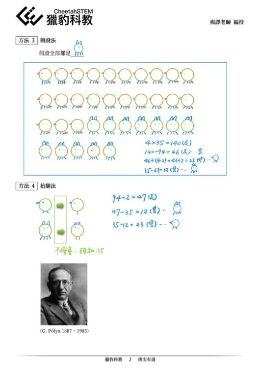
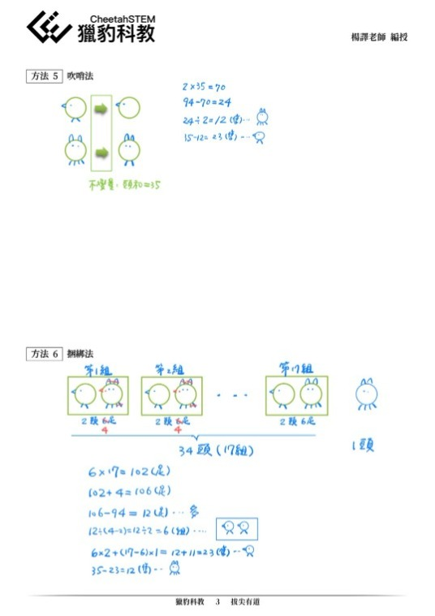
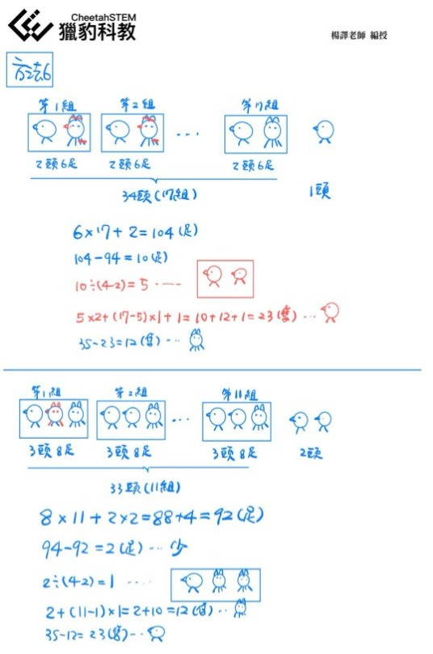
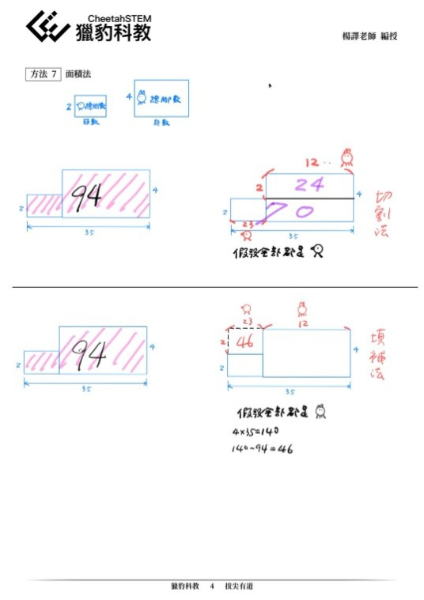
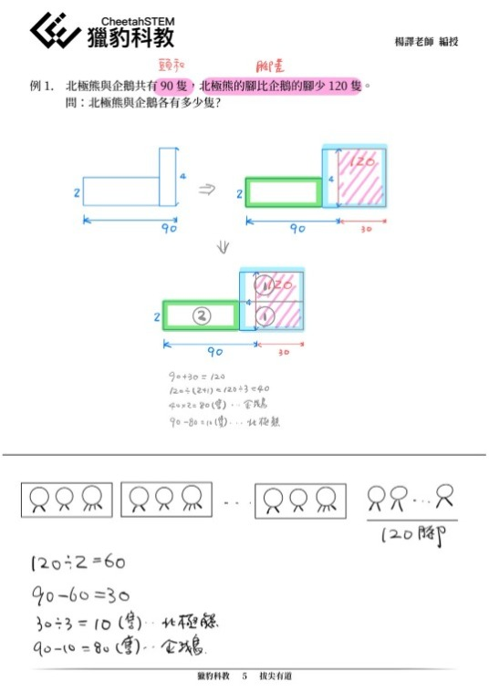
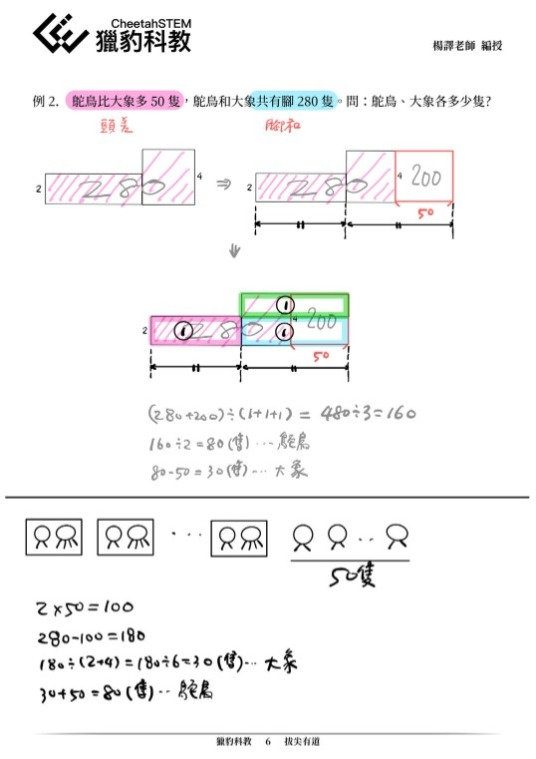
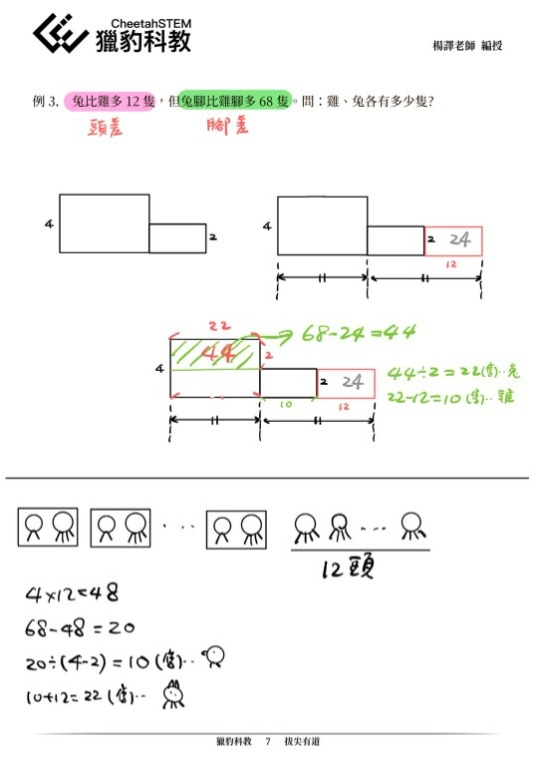

超越競賽教學的獵豹⼩學PK 課程
雞兔問題的⼀題多解
許多家⻑看到眾多獵豹學⼦的優異表現或經由⼝碑推薦，紛紛洽詢我們，希望瞭解PK教材的內容與教學特⾊。
獵豹PK ⼩學課程是由具有豐富教學與專業涵養的教學團隊、匯集世界各國資料，再經多次的教學會議討論、改編撰寫所凝練出來的成果 。
⼀如召集⼈宗翰⽼師強調的，好的啟蒙教育不應只侷限在強調冷僻知識、刁鑽技巧的競賽教學。
獵豹課程是以課綱為經、研究⽅法為緯，發展思考、推理、啟發、創意…的綜合能⼒為核⼼主軸，競賽教學僅是其中的⼀個環節。
我們以楊譯⽼師在PK1A 課堂講解雞兔問題的教學為例，他多⾯向地使⽤多元⽅法演繹了七種解題⽅法，並變化出多種延伸題型。
（⾒下圖PK1A課後提供的老師筆記）
我們歡迎期待具有遠⾒的家⻑帶著有天賦、有潛⼒、有熱情、願意努力的孩⼦，⼀起加⼊獵豹學堂與美妙的數學共舞！
--

歡迎參加
「獵豹小學 3~6年級PK系列 (上學期) 課程 開跑了!」
https://www.facebook.com/groups/695697124716309/permalink/1267980884154594/






